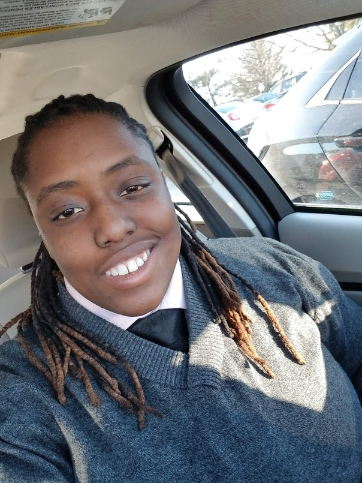

About Me
Phill Mitchell-Matsuyama (they/them) is an aspiring software engineer who lives in Baltimore, MD with their wife and two cats. Currently, they work for a security firm as a security engineer, designing physical security systems for various US agencies. They are originally from The Bahamas but moved to the US in 2014 to attend school in Minnesota. In 2018, they earned a dual Bachelor of Science in Computer Engineering Technology and Electronic Engineering Technology.
After moving to Baltimore in August of 2018, Phill obtained a job as a Control Systems Specialist at an Amazon fulfillment center. Although the pay was good, Phill decided to leave in January of 2019 due to the long and irregular hours. They’ve been working at the security firm ever since. In the summer of 2019, Phill applied for and was accepted into a coding bootcamp program at Johns Hopkins University. After completing the bootcamp in April, 2020, they hope to begin utilizing what they learned in bootcamp in the field of software engineering.